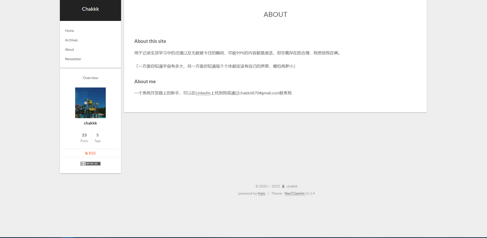
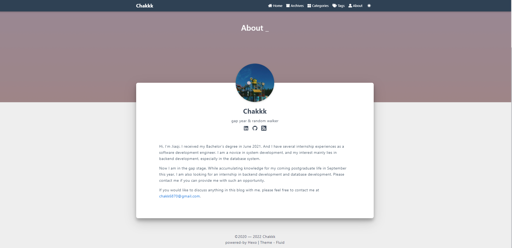

博客维护日志
2022/08/28
增加了Fluid的主题配置，记录下用到的插件：
- RSS支持：hexo-generator-feed
- 豆瓣书影音界面：hexo-douban
- 加密：hexo-blog-encrypt
- 将文章链接从中文转换成拼音：hexo-permalink-pinyin
- 自动对source路径下的图片进行压缩：hexo-all-minifier
TODO: 希望之后做一下SEO的相关优化
2022/04/01
github pages绑定自定义域名，并启用https加密
ref: Custom domains on GitHub Pages gain support for HTTPS
2022/02/10
最近发现了一个比较喜欢的主题Fluid，于是又回归了hexo。于是从：

变为了：

以及今年会更专注于数据库系统的学习记录。
2022/01/06
使用halo作为博客工具已经有一年多的时间了，驱动力不足，最近才做了一下对于blog的维护工作，大概从以下几个方面着手：
Halo版本升级
看了一下当前使用的halo还停留在1.4.8，最新的版本已经升级到1.4.16，主要是升级了部分依赖中的 log4j2 版本。 我是使用docker部署，只需要重新拉取镜像重新运行即可，可参考官网文档更新。
设置定时备份
数据备份是一种非常重要的事情，毕竟俺就这么点数字遗产了，参考文章 新建定时任务实现自动备份到github。
关于图床
之前一直使用七牛云作为图床，但备案很麻烦，所以暂时使用qiniu的测试域名，30天自动过期，这就导致时不时文章中的图片会裂开......目前有以下下几个关于图床的想法：
- 自建图床：自建图床固然是最安全的方式，但由于服务器配置不高且文章配图确实很多，综合考虑不太符合当下场景
- 继续使用七牛云：使用公有云，性价比比较高。但需要解决域名过期问题（TODO）
- 使用halo api上传图片：同样使用服务器带宽，不是很推荐
- 使用Nginx代理OSS：思路待完善
更新了【About this site】
站点添加HTTPS证书（TODO）
2021/06/09
一次比较惨痛的 #记一次服务器被入侵后的问题分析与数据备份
2020/03/22
重装系统后的 #Hexo Installation
博客维护日志
https://chakkk309.github.io/2022/01/06/BlogMaintain/